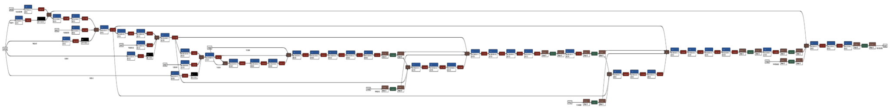

I turned a forest trail near my apartment into a playable neural world.
You can explore that world in your web browser by clicking right here:
By "neural world", I mean that the entire thing is a neural network generating new images based on previous images + controls. There is no level geometry, no code for lighting or shadows, no scripted animation. Just a neural net in a loop.

By "in your web browser" I mean this world runs locally, in your web browser. Once the world has loaded, you can continue exploring even in Airplane Mode.
So, why bother creating a world this way? There are some interesting conceptual reasons (I'll get to them later), but my main goal was just to outdo a prior post.
See, three years ago, I got a simple two-dimensional video game world to run in-browser by training a neural network to mimic gameplay videos from YouTube.
Mimicking a 2D video game world was cute, but ultimately kind of pointless;
existing video games already exist and we can already emulate them just fine.
The wonderful, unique, exciting property of neural worlds is that they can be constructed from any video file,
not just screen recordings of old video games.
My previous post didn't really get this across.
So for this post, to demonstrate what makes neural networks truly special,
I wanted to train a neural network on gameplay videos of the actual world.
Recording data
To begin this project, I walked through a forest trail, recording videos with my phone, using a customized camera app which also recorded my phone's motion.
I collected ~15 minutes of video and motion recordings. I've visualized motion as a "walking" control stick on the left and a "looking" control stick on the right.
Back at home, I transferred the recordings to my laptop, and shuffled them into a list of (previous frame, control → next frame) pairs just like my previous game-emulation dataset.
Now, all I needed to do was train a neural network to mimic the behavior of these input→output pairs. I already had working code from my previous game-emulation project,
so I tried rerunning that code to establish a baseline.
Training baselines
Applying my previous game-emulation-via-neural-network recipe to this new dataset produced, regrettably, a sort of interactive forest-flavored soup.
My neural network couldn't predict the actual next frame accurately, and it couldn't make up new details fast enough to compensate, so the resulting world collapsed even if I gave it a running start by initializing from real video frames:
Undaunted, I started work on a new version of the neural world training code.
Upgrading the training recipe
To help my network understand real-world video, I made the following upgrades:
- Adding more control information. I upgraded the "control" network input from simple 2D controls to more-informative 3D (6DoF) controls.
- Adding more memory. I upgraded the "memory" network input from a single frame to 32 frames (using lower resolution for the older frames).
- Adding multiple scales. I restructured the network to process all inputs across multiple resolutions, instead of a fixed 1/8 resolution.
These upgrades let me stave off soupification enough to get a half-baked demo:
This was significant progress. Unfortunately, the world was still pretty melty,
so I started work on a second batch of improvements (more daunted this time).
Upgrading the training recipe more
This time, I left the inputs/outputs as-is and focused on finding incremental improvements to the training procedure. Here's a mercifully-abbreviated montage:
The biggest jumps in quality came from:
- Making the network bigger: I added even more layers of neural network processing, while striving to maintain a somewhat-playable FPS.
- Picking a better training objective: I adjusted training to put less emphasis on detail prediction and more emphasis on detail generation.
- Training longer: I trained the network longer on a selected subset of video frames to try and eke out the highest-quality results.
Here's a summary of the final forest world recipe:
- Dataset: 22,814 frames (30FPS SDR video, timestamped ARKit poses) captured at Marymoor Park Audobon Bird Loop with iPhone 13 Pro.
- Inputs:
3x4-element relative camera pose, 2-element gravity-relative roll/pitch, relative time delta, valid/augmented bit,
4 past-frame TCHW memory buffers (32×3×3×4, 16×3×12×16, 8×3×48×64, 4×3×192×256),
4 U(0, 1) single-channel noise tensors at each spatial scale (like StyleGAN). - Model: Asymmetric (decoder-heavy) 4-scale UNet with reduced-size full-resolution decoder block.
~5M trainable parameters, ~1 GFLOP per generated 192×256 frame.  - Training: AdamW constant LR + SWA, L1 + adversarial loss, stability fixes from the game-emulation recipe, around ~100 GPU-hours (~$100 USD).
- Inference: Control-conditioned sequential autoregression with 60FPS cap, preprocessing in JS, network in ONNX Runtime Web's WebGL backend.
Whew. So, let's return to the original question:
why bother? Why go through so much work to get a low-resolution neural world of a single forest trail?
Why not make a stabler, higher-resolution demo using traditional video game techniques?
Two ways to create worlds
Traditional game worlds are made like paintings. You sit in front of an empty canvas and layer keystroke upon keystroke until you get something beautiful. Every lifelike detail in a traditional game is only there because some artist painted it in.
Neural worlds are made rather differently.
To create a neural world of a forest,
I walked into an actual forest and pressed "record" on the device in my hand.
Every lifelike detail in the final world is only there because my phone recorded it.
So, if traditional game worlds are paintings, neural worlds are photographs.
Information flows from sensor to screen without passing through human hands.
Admittedly, as of this post, neural worlds resemble very early photographs.
Early cameras barely worked, and the photos they took were not lifelike at all.
The exciting part was that cameras reduced realistic-image-creation from an artistic problem to a technological one.
As technology improved, cameras did too, and photographs grew ever more faithful to reality while paintings did not.
I think that neural worlds will improve in fidelity just like photographs did.
In time, neural worlds will have trees that bend in the wind, lilypads that bob in the rain, birds that sing to each other.
Automatically, because the real world has those things and a tool can record them. Not because an artist paints them in.
I think the tools for creating neural worlds can also, eventually, be just as convenient as today's cameras. In the same way that a modern digital camera creates images or videos at the press of a button, we could have a tool to create worlds.
If neural worlds become as lifelike, cheap, and composable as photos are today,
narrative arrangements of neural worlds could be their own creative medium,
as distinct from today's video games as photographs were from paintings.
I think that would be very exciting indeed!
Neural networks which model the world are often called "world models" and many smart people have worked on them; a classic example is Comma's "Learning a Driving Simulator", and some more recent examples are OpenDriveLabs' Vista or Wayve's GAIA-2. If you're a programmer interested in training your own world models, I recommend looking at DIAMOND or Diffusion Forcing.
Compared to serious "Foundation World Models" with billions of parameters,
the GAN-based WM featured in this post is a toy (and a fairly brittle one at that).
Still, it would be fun to improve the recipe further and make a few more worlds.
If you know a place near Seattle that would be interesting to capture, LMK.